Bienvenido a Prepárate Ahora
La preparación para emergencias es crucial para asegurar la seguridad y bienestar de tu familia en situaciones de crisis. Aquí encontrarás información sobre los suministros necesarios, cómo preparar alimentos de larga duración y otros consejos esenciales.
¿Estás listo para cualquier emergencia?
¡Explora nuestras páginas para obtener más detalles!
Kit de Emergencia
Un buen kit de emergencia debe incluir:
- Agua (al menos un galón por persona por día para al menos tres días)
- Comida no perecedera (suficiente para al menos tres días)
- Radio de emergencia con baterías adicionales
- Linterna y baterías adicionales
- Botiquín de primeros auxilios
- Silbato para pedir ayuda
- Máscara para filtrar aire contaminado
- Toallitas húmedas, bolsas de basura y bridas de plástico
- Herramientas básicas como llaves y alicates
- Mapas locales
Preparación de Alimentos
En situaciones de emergencia, es vital tener una reserva de alimentos no perecederos. Algunos ejemplos incluyen:
- Enlatados (frutas, verduras, carnes)
- Granos secos (arroz, pasta, lentejas)
- Barras de granola y proteínas
- Leche en polvo o enlatada
- Frutas y verduras deshidratadas
Guía de Supervivencia
Para sobrevivir a una emergencia, sigue estos pasos básicos:
- Infórmate sobre los riesgos específicos de tu área.
- Crea un plan de comunicación familiar.
- Establece un punto de encuentro seguro.
- Conoce las rutas de evacuación y ten un plan de escape.
- Mantén tu kit de emergencia actualizado.
Consejos y Trucos
Algunos consejos útiles para estar preparado incluyen:
- Revisa tu kit de emergencia cada seis meses.
- Participa en simulacros de emergencia locales.
- Apunta números de emergencia y contactos importantes.
- Ten siempre efectivo a mano, en caso de que los cajeros automáticos no funcionen.
Peligros Conocidos
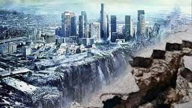
Terremotos
Los terremotos son movimientos bruscos de la corteza terrestre que pueden causar daños significativos a edificaciones y desencadenar tsunamis en áreas costeras.
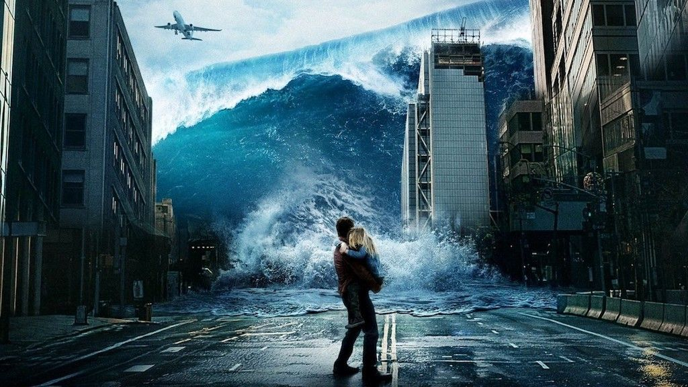
Inundaciones
Las inundaciones ocurren cuando áreas terrestres se cubren de agua, generalmente debido a fuertes lluvias, desbordamientos de ríos o deshielos, causando daños a la propiedad y pérdida de vidas.
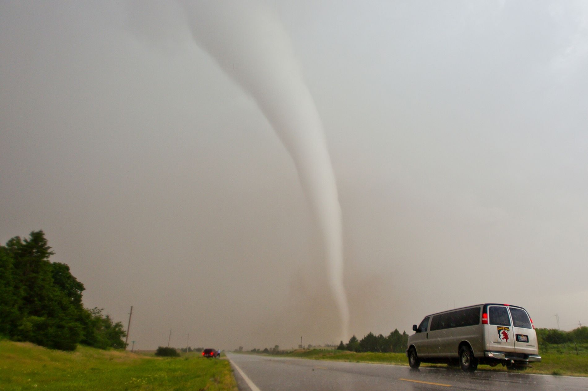
Tormentas Severas
Las tormentas severas, como huracanes, tornados y tormentas eléctricas, pueden generar vientos destructivos, inundaciones repentinas y daños estructurales graves.
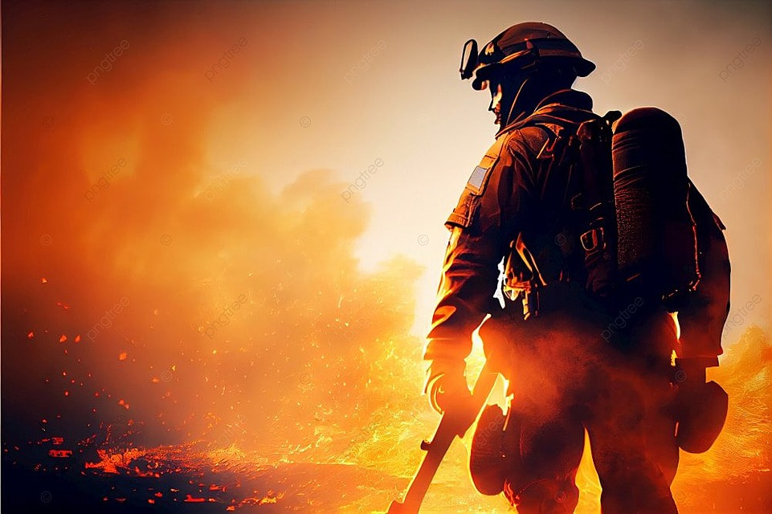
Incendios Forestales
Los incendios forestales pueden propagarse rápidamente, destruyendo vastas áreas de bosques, viviendas y provocando pérdidas humanas, así como daños ambientales significativos.
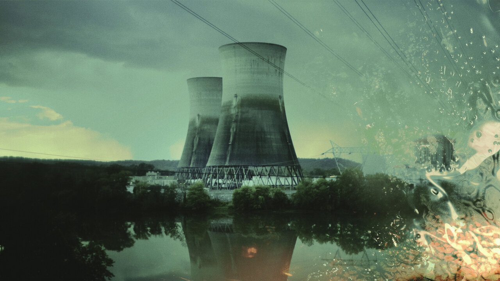
Contaminación Nuclear
La contaminación nuclear puede ocurrir como resultado de accidentes en plantas nucleares o pruebas de armas nucleares, provocando riesgos para la salud, contaminación ambiental y desplazamiento de personas.
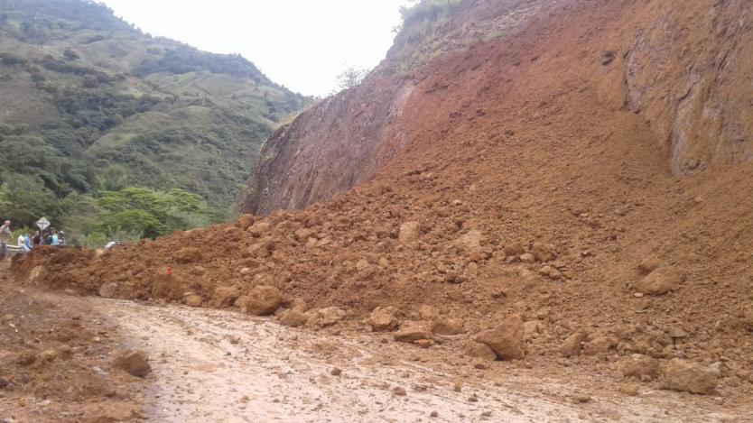
Deslizamientos de Tierra
Los deslizamientos de tierra son movimientos abruptos de suelos que pueden ocurrir debido a la saturación del terreno, terremotos o actividades humanas, causando daños a la propiedad y amenazando la vida humana.
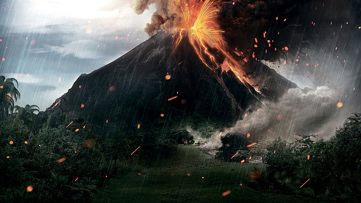
Erupciones Volcánicas
Las erupciones volcánicas liberan magma, cenizas y gases tóxicos que pueden provocar destrucción de áreas cercanas, cambios climáticos temporales y riesgos para la salud.
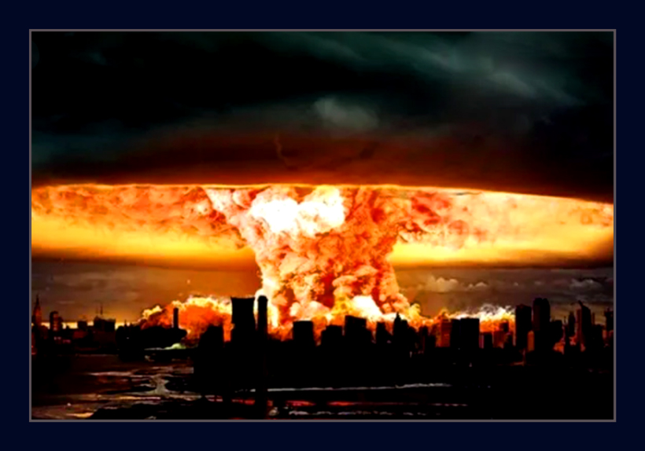
Guerra Nuclear
La amenaza de una guerra nuclear sigue siendo un riesgo grave. Los efectos de las armas nucleares pueden ser devastadores, causando destrucción masiva, pérdida de vidas humanas, contaminación radiactiva y un impacto duradero en el medio ambiente.
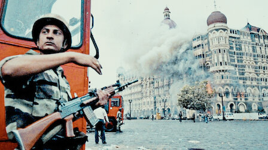
Ataques Terroristas
Los ataques terroristas pueden ser perpetrados mediante explosiones, ataques armados o ataques cibernéticos, causando terror, lesiones y muertes, así como daños materiales significativos.
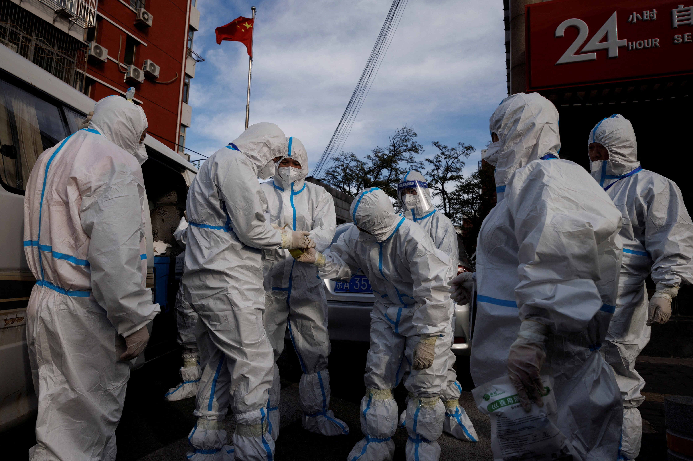
Pandemias y Epidemias
Las pandemias y epidemias, como la propagación de enfermedades infecciosas, pueden tener un impacto devastador en la salud pública, la economía y la sociedad en general.
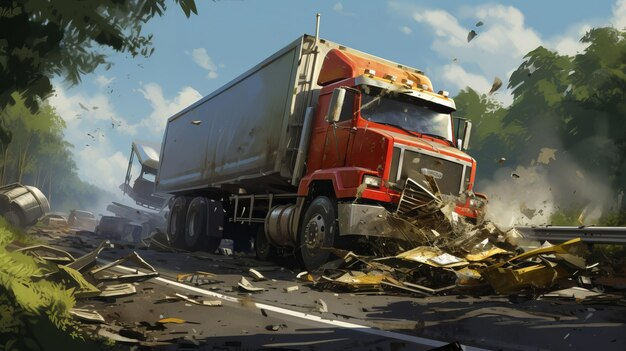
Accidentes de Transporte
Los accidentes de transporte, como choques de vehículos, descarrilamientos de trenes o accidentes aéreos, pueden resultar en lesiones graves, pérdida de vidas y daños materiales significativos.
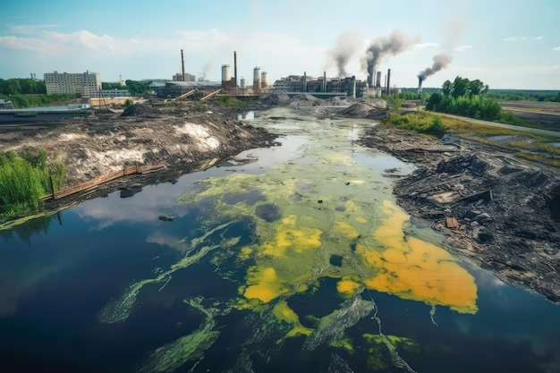
Contaminación del Aire y del Agua
La contaminación del aire y del agua, causada por emisiones industriales, vertidos de desechos y otros factores, puede afectar la salud humana, la vida acuática y el medio ambiente en general.
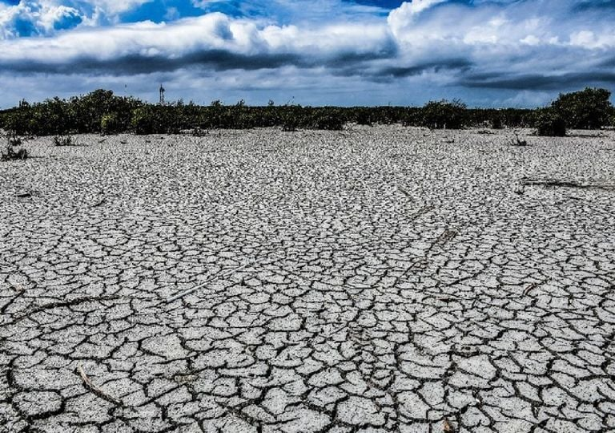
Sequías
Las sequías prolongadas pueden provocar escasez de agua, pérdida de cultivos, hambrunas y conflictos por recursos, afectando gravemente a comunidades y ecosistemas.
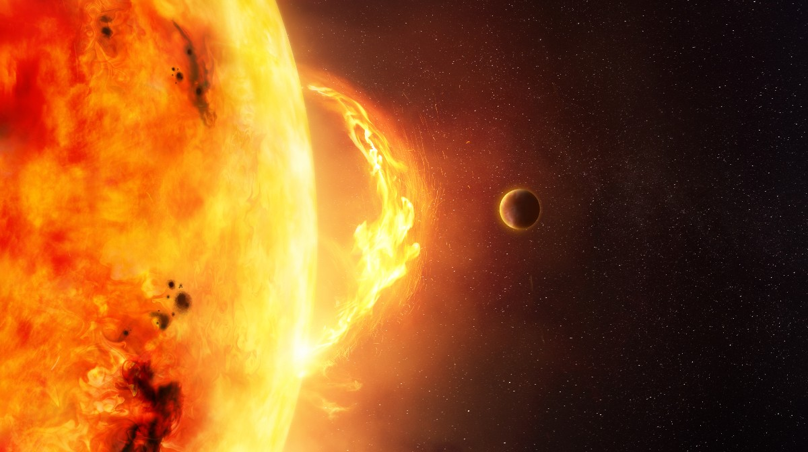
Tormentas Solares: Explosiones en la atmósfera solar que pueden liberar enormes cantidades de energía y radiación hacia la Tierra, potencialmente afectando las redes eléctricas, las comunicaciones satelitales y los sistemas de navegación.
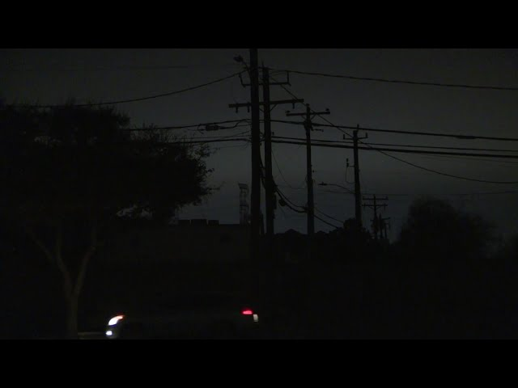
Gran Apagón de Luz: Un evento masivo de interrupción del suministro eléctrico que puede afectar vastas áreas geográficas, dejando a las comunidades sin energía eléctrica durante períodos prolongados, lo que puede causar problemas de seguridad, salud y logística.
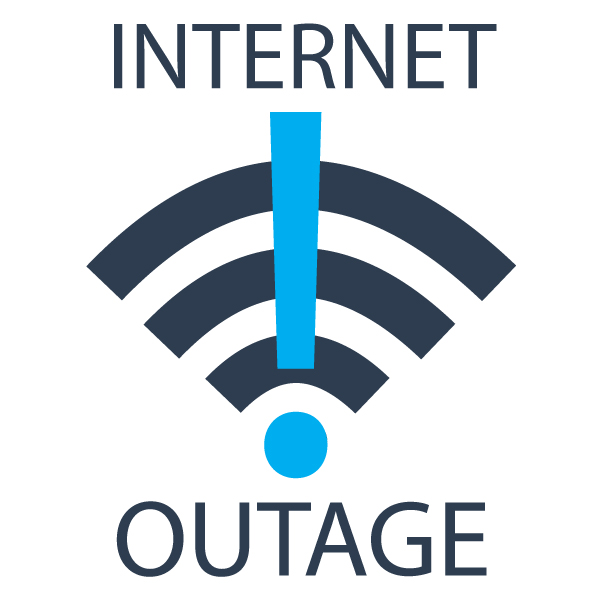
Apagón de Internet: La interrupción total o parcial de los servicios de internet que puede ser causada por fallas técnicas, ataques cibernéticos, desastres naturales u otros eventos, lo que puede afectar las comunicaciones, el acceso a la información y las operaciones comerciales.